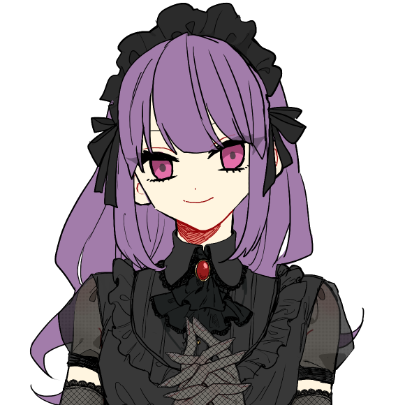

メインログ / 雑談ログ
関連作：「Counter Side」 / 「霧の狭間の罪人達」
キャラシート
PC1：胤角真環 (キャラシート) PL：ふろずんPC2：古代政宗 (キャラシート) PL：LISP
目次
■オープニングフェイズ01 運命の少女
プリプレイ
GM : では自己紹介から初めて行きましょう、PC1お願いします！
■PC1：胤角真環
ロイス：さちか
カヴァー/ワークス：高校生/FHチルドレン
あなたはかつての実験が凍結される前、研究所で一人の少女と会ったことがある。
さちかという、あなたと同じように実験体にされていた少女だ。
さちかは他者に幸運をもたらす能力を持っており、その幸運の力であなたは実験の最中に助けられたことがあった。
今思えば、あなたがみゆきと出会えたのは、さちかから授けられた幸運のおかげだったのかもしれない。
しかし、さちかの方はあれからみゆきに助けられることもなく行方不明になっている。彼女は今どこにいるだろうか。
胤角 真環 :
PC1・胤角 真環(ミカド ミカン)は、デレデレツンデレFHチルドレンです🍊
FH特有の倫理観をガン無視した実験で生まれました。 HOロイスのさちかちゃんとは、そこで知り合ったカンジですね💊
マスターレイスを目標にもしてたのですが、その実験は失敗に終わってしまい、行き場を失くした時に霧下みゆきに拾われました🍈
このことをきっかけに霧下みゆきのことをスキになったらしいです。 スキになったのがみゆみゆで大丈夫？(過去の悪行を見ながら)
彼女に心酔する他のFHチルドレンたち(通称・みゆチル)よりも独占欲が強いので、玲瓏女学院での一件※は根に持ってます🍊💢
※霧下みゆきは胤角真環と同棲することになったにも関わらず、他校の寮で浮気していた。 詳細は『霧の狭間の罪人達』ログを参照。
身体的特徴としては「未成熟な身体」と「実験で移植された大きな角」が挙げられます👿
この二つについては、触れようとするとキレるので要注意ですね🍊💢
戦闘能力的には「高い攻撃力でいっぱい殴る」というシンプルなスタイルです🐺
クライマックスではヤバいバフを撒いたり撒かなかったり！ 以上！！
GM : み、みゆ…浮気…？知らんみゆね…
胤角 真環 : うそつけみか…しっかり浮気してフラれてたみかよ…🍊💢
GM : みみゆゆゆ…ちなみにこのシナリオは罪人卓が終わった直後になるのでオープニングでは回想の後に勝手に出て行ったみゆに怒るRPが出来ます
胤角 真環 : 存分にキレます💢💢💢💢💢
GM : 鎮まれ鎮まれみゆ…🍈💦
GM : 自己紹介分かりやすくて助かるね、ありがと！
GM : じゃあ次PC2いきましょ！
古代 政宗 : はいな！
■PC2：古代政宗
ロイス：晒科ザクロ（サラシナザクロ）
カヴァー/ワークス：指定無し/FHチルドレン
あなたはかつて落ちこぼれだったFHチルドレンだ。
“マスターブラッド”晒科ザクロはあなたと同じ施設で育ったチルドレンだが、今やマスターエージェントにまで登り詰めた彼女とは雲泥の差だった。
しかし現在のあなたは霧下みゆきに引き取られ、みゆきの指導で立派なエージェントとして成長した。
今では一人でもしっかりとFHの任務をこなすことが出来ている。
自身の成長を実感し始める中、みゆきからあなたに新たな指令が下されるのだった。
古代 政宗 : 「自己紹介…？ 私が、ですか…？」
古代 政宗 : 「えと…私の名前は古代政宗（コシロ・マサムネ）です。ヘンな名前ですよね…ご、ごめんなさい…」
古代 政宗 : 「組織の人からは”月下美人”とも…呼ばれてます…」
古代 政宗 : 「弱っちくてまだまだ半人前のオーヴァードですけど…今回もお役に立てるよう頑張り…ます…！」
古代 政宗 : PC2、古代政宗！ 病弱気弱チルドレンです！！！
古代 政宗 :
レネゲイドが自己破壊能力を持つ特異体質で生まれつき身体が弱く、FHの研究でなんとか生かされてきたという経歴の持ち主。
それゆえまともに能力を使うこともままならないけれど、みゆゆに指導を受けてからは弱点を克服して任務をしっかりこなせるようになりつつある感じです！
古代 政宗 : 自分のことは一人ではなにもできないグズという自己評価は変わってないので、何事にも自信がなかったりおどおどしがちだけど精一杯生きています。
古代 政宗 : 能力はブラッドボムを使った特攻型。反動はHP回復でカバーするけど出目が爆発してそのまま死亡するのはご愛敬。
古代 政宗 : みかんちゃんHP貸して！（紅のベーゼ）以上です！
GM : おどおどしてる女の子きゃわきゃわで良いぞ…
古代 政宗 : 気弱系の女子をやるのは数年ぶりのような気がする！がんばっておどおどするよ…（？）
GM : PC二人だけだから完全にHP取られるの確定してるみかんちゃん
胤角 真環 : 吸血衝動持ってるから、どちらかと言うと吸いそう側なのに；；
GM : かわいそうなみかんちゃん…
GM : りすぴっぴのこういうPC物凄く珍しいし楽しみね、紹介ありがと！
GM : じゃあオープニングから始めて行きましょう
メインプレイ
シーン1 運命の少女
GM : PC1、みかんちゃんのオープニングになります。登場侵食5点お願いします。
system : [ 胤角 真環 ] 侵蝕率 : 37 → 42
アレイスター計画 実験場
GM : これはあなたがまだアレイスター計画の実験体“被検体b-66”として扱われていた、霧下みゆきと出会う少し前の頃。
GM : 今日の戦闘実験を終え、食事を取った後に僅かに与えられた自由時間の間のことだ。
GM : あなたは疲れからか、施設の共有スペースで椅子に座ったままいつのまにか眠ってしまっていた。
GM : そろそろ自由時間は終了になる。だが、あなたを起こそうとする他の被検体は誰もいない。
GM : 被検体同士が殺し合う実験が行われるこの場所でそんな風に馴れ合う者はいなかった。
GM : ただただ無関心か、それとも時間を破って勝手に罰でも受ければいいと考えているのだろう。他の者達は次々に部屋から出ていく。
さちか : 「ねえねえ、起きて」
GM : しかし、あなたはそんな穏やかな声をかけられて目を覚ますことになった。
胤角 真環 : 「ん、あぁ……？ 」不機嫌そうによだれを拭って、目を開ける。

GM : 瞼を開けると、一人の少女があなたの前に立っていた。
GM : 緩やかにウェーブした長く白い髪が特徴的な幼い少女だった。
GM : ゆったりとした白いワンピースに身を包み、全身が白で覆われた彼女は一切の穢れがない透明感を覚えさせる。
GM : 初めて見るが、あなたと同じ被検体の一人だろう。だがその少女はどこか異様だった。
さちか : 「こんなところで寝てると、風邪ひいちゃうよ」
GM : 少女の声や雰囲気にはまるで敵意が無かったのだ。彼女は桜色の瞳であなたをただ心配そうに覘きこんでいる。
胤角 真環 : 「…………アンタには関係ないでしょ。 それとも何？ 戦闘試験の時に手を貸してほしいとかそういうの？」狙いがあるに違いない、と怪訝そうな目で見る。
さちか : 「手を貸す……？」 どういう意味か何も分かっていないようで、きょとんとしている
胤角 真環 : 「……はぁ。 いいから、そういう演技。 ここで生き残るために手を貸してほしいとかそういう話でもなければ、他のヤツに声をかける意味なんてないでしょ。」
さちか : 「……？」 首を傾げてから
さちか : 「そうかなぁ。よく分からないけど、さちかはさちかが話したい人に声かけるよ」
GM : さちか、とは彼女の名前のことなのだろう。しかし、それは被検体の番号名ではなかった。
胤角 真環 : 「はぁ？ 本気で言ってるなら呑気過ぎでしょ。そんなんでよく今まで生きてられたわね……。」
胤角 真環 : 「っていうか、何。 『さちか』って。」
さちか : 「え？ただの名前だよ。あなたにもあるでしょ？」
胤角 真環 : 「名前？ ハッ、そんなのアタシたち被検体にある訳ないでしょ。 ああ、『b-66』が名前って事になるのかしらねぇ？」鼻で笑って
胤角 真環 : 「……ああ、わかったわかった。 アンタ、外から連れてこられたクチでしょ？ ここでのルールを何にも知らないものね。」合点が言ったように
さちか : 「そう……なのかも……？」 外がどこなのか分かってないのか曖昧な様子
胤角 真環 : 「『なのかも』ってアンタね……。 あのね、元々はアンタにも家族とかいうのがいて、そいつらから貰った名前なんでしょってこと。 その『さちか』？ とかいうの。」溜息をついて
さちか : 「家族……家族っていうのは、よく分からないかも」
さちか : 「さちかって名前は、別の人から名付けてもらったんだよ」
胤角 真環 : 「ふうん……、外から攫われてきた訳じゃないのね。 じゃあ、別の人って誰よ？ 実験用のモルモットに名前なんて付けるバカがいるとは思えないけど。」
さちか : 「んー……。んーと、えーと……誰って言われると、どう言えばいいのかなぁ……」
さちか : 「お母さん……じゃないし、研究者……でもない感じがするし……」
さちか : 「何て言えばいいのか分からないけど、さちかと仲良くしてくれてた人、かなぁ……」
胤角 真環 : 「なかよくしてくれてた人、ねぇ……。 こんなところにそんなのいたとは到底思えないけど。」
胤角 真環 : 「……あのね、さちか。 アンタは状況がのみこめてないようだから、一応、教えてあげる。」
さちか : 「うん……？」
胤角 真環 : 「ここは殺し合いをする場所なの。 馴れ合いなんてしてもいずれ殺しあうことになるの。 他者と仲良くしたところで弱点になるだけ。 ……だから、アンタが話しかけてきたのは全くのムダって訳。」
胤角 真環 : 「これでアンタがどれだけバカかわかった？」
さちか : 「そうかなぁ……？さちかは別に、話しかけたいから話しかけただけだけど……」
さちか : 「あっ。でも無駄か無駄じゃないかで言うと、無駄ではないんじゃないかな？」
胤角 真環 : 「なんでそうなるの？？？？」はぁ、と肩をすくめる
さちか : 「だって、あなたに今親切に色々教えてもらえたじゃない」 嬉しそうに小さく笑って
胤角 真環 : 「……ヘンな奴。」
さちか : 「そう？さちかは普通にしてるつもりなんだけどなぁ」
胤角 真環 : 「そのフツウがここじゃヘンって話でしょ……。 まあ、いいわ。 」
胤角 真環 : 「アンタに話しかけられるのがイヤって訳でもないし、話しかけたいなら勝手に話しかければ？ 相手するかはその時の気分次第だけどね。」
さちか : 「ほんと？じゃあ、そうするっ」
胤角 真環 : 「次に話しかけてくるまでにアンタが死んでたら知らないけどね。」
さちか : 「じゃあさちか、死なないようにしなきゃね」 暢気そうに微笑みながら
胤角 真環 : 「まったくのんきね……。」フッと笑って
さちか : 「ふふっ……。あ、そうだ、もう時間だから起こさなきゃって思ってたんだ。そろそろ戻らなきゃ──」
GM : と、その時。くぅ……と、さちかの腹の音が小さく鳴った。
さちか : 「あ……」 両手でお腹を押さえてる
胤角 真環 : 「……何？ アンタ、おなか減ってんの？」
胤角 真環 : 「ま、見るからに戦闘成績悪そうだもんね。 どうせイモぐらいしか貰ってないんでしょ。」
さちか : 「うん……。ここのご飯、量少ないよね……もっとくれてもいいのにな」 しょんぼりして
胤角 真環 : 「アンタが強くなれば量も質もよくなるでしょ。 現にアタシはお腹一杯食べてるし？」
胤角 真環 : 「……ま、アンタが飢えてもアタシには関係ないハナシね。 それじゃ。」踵を返して
胤角 真環 : そのままスタスタと遠ざかっていくが、出口の扉まで歩いていったところで「はあ…。」と溜息をついて、さちかの元に戻ってくる。
さちか : 「……？忘れ物？」
胤角 真環 : 「…………。」無言でさちかちゃんの顔を見て
胤角 真環 : 「――アタシは戦闘成績優秀でお腹いっぱいだったから、これ余ったのよね。 処理しといて。」半分になった蜜柑を押し付けるように渡す
さちか : 「え？……いいの！？ありがとう！」 嬉しそうに半分の蜜柑を見て
胤角 真環 : 「……おめでたい奴ね。 残り物を捨てただけでしょ。」
さちか : 「そう？さちかは嬉しいけど……いただきますっ」
胤角 真環 : 「はいはい…。」
GM : さちかは蜜柑の実を一房口に運ぶ。
さちか : 「……！おいしい！おみかんって初めて食べたけど……久しぶりな感じがする！」
GM : そんなよく分からない感想を言いながら、美味しそうに笑顔でもぐもぐと食べ進めている。
胤角 真環 : 「初めてなのに久しぶりって、ホントにヘンな奴。」
さちか : 「ふふっ、なんでだろー……ごちそうさまでした。美味しかった！」 手を合わせて
胤角 真環 : 「そう。 それじゃ、アタシはこれで。」興味なさそうに
さちか : 「うん。……あっ、待って待って。さちかも一緒に戻るー」 あなたについていく
胤角 真環 : 「……待たない。 ついてきたいなら勝手についてきなさい。」(どうしてこんなのに蜜柑あげちゃったかな。深夜に食べようと思ってたのに…。)と思いながら、早歩きで
さちか : 「えー？んー、わかった」 小さいので歩幅が狭く、頑張って小走りでついていった
GM : ──これがさちかとの出会いだった。
GM : その後、あなたはさちかと共に過ごすことが多くなった。それはこの研究所ではありえない、友人関係に近い間柄だっただろう。
GM : だがしばらくして、今でも名乗っている胤角真環という名を一緒に考えた会話以降、あなたとさちかが顔を合わせることは無くなってしまった。
GM : 角の移植が主要な実験となり、実験体同士が接触する場がなくなってしまったのだ。
ルーム b-66
GM : そして、これはあなたが角の移植実験を受けた夜のこと。
GM : ……あなたは高熱を出して倒れてしまっていた。
GM : あなたの移植された角はジャームの力そのものと言える代物だ。角に適合しなかった実験体は非常に多く、皆ジャーム化し殺処分された。
GM : あなたは数少ない実験成功者だったが、それでも移植されたばかりの角がもたらす負担は凄まじいものだった。
GM : 角との拒絶反応のせいで暴れ狂うレネゲイドが体を蝕んでいく。
GM : この高熱はレネゲイドの暴走に体が抵抗しようとしているものなのかもしれない。
GM : だが体はだる重く、ベッドから少しも動くことが出来ない。
GM : 全身びっしょりと汗をかいて気持ちが悪い。喉はからからに乾いていて、とにかく水が飲みたかった。
GM : しかし、そんなあなたを診てくれる者は誰もいない。診たところでどうすることも出来ないのだろう。
GM : 「もしかしたら、b-66もダメだったのかもしれないな」「成功したと思ったのだがね。このままあの状態が続くようなら、処分するしかあるまい」
GM : 部屋の外から廊下を通りすがる研究者達の声が聞こえてくる。
GM : 視界は霞み、意識は朦朧としている。なのにあなたを見放すその言葉だけははっきりと聞こえていた。
胤角 真環 : 「(アタシは他の失敗作達なんかとは、ちが、う……！ アタシにはマスターの称号を得ることができる……。 アタシには価値がある……。 だから、だから……。)」
胤角 真環 : 「アタシを、捨て、ない、で……。」ぐらぐらと揺れる視界の中、なんとか立ち上がろうと体に力を入れるが、小さな声程度しか出すことができなかった。
さちか : 「捨てたりなんかしないよ」
GM : あなたのすぐ傍から、そんな優しい声が聞こえてくる。
GM : いつのまにか、ベッドの隣にさちかが立っていた。
胤角 真環 : 「ぇ……、あん、た。 なん、で……。」消え入りそうな声で言う
GM : さちかは、にこっと笑いかけて
さちか : 「さちかね、みかんちゃんに幸運を授けにきたの」
GM : そう言って、あなたの手を優しく握る。
GM : その瞬間、あなたは体を蝕む熱が消えていくのを感じる。火照った体はあっという間に冷えて、元の体温に戻っていた。
GM : 鉛のように重かった体は軽く、簡単に動かすことが出来るようになっている。
GM : 霞んでいた視界はカメラのピントが合うようにはっきりとし、微笑みかけるさちかの顔が綺麗に見えていた。
胤角 真環 : 「幸、運？ それって……。あ、あれ……？ 」尋ねようとした時には、もう声が通るようになっていて、いきなり治ったことに困惑する。
さちか : 「もう大丈夫でしょ？さちか、人を幸せにする力が使えるようになったから……」 安心したように優しく見つめて
胤角 真環 : 「う、うん。もう大丈夫、だけど……、幸せにする力って……？ 」
さちか : 「うん。さちかが今みたいにこうして触れるとね、その人は幸運になるみたいなの」
さちか : 「だから今の症状も治ったの。それにきっとこれから、みかんちゃんにはもっと良いことが起こるよ」
胤角 真環 : 「幸運と症状って関係あるのかしら……？ まあ、それはともかく、」
胤角 真環 : 「……その。 ありがと。 さちか。 ……助けてくれて。」
さちか : 「……うんっ。どういたしまして」 少し照れたように笑う
さちか : 「……っと。じゃあ、さちかもう行くね？」
胤角 真環 : 「えっ。 行く？ 何処に？ ――あ、そっか。 他の被検体の部屋に勝手に侵入するのは確かにダメね……。 」
さちか : 「それはそうなんだけど……他の人達の部屋にも行こうと思うの。さちか、ダメな子だね」
胤角 真環 : 「ああ、そういうこと……。 助けてもらった立場から言える文句なんてないわ。 そもそも、結構、アンタって勝手にしたいことするヤツでしょ。」
胤角 真環 : 「話しかけてきた時もそうだったし……。」懐かしそうに笑って
さちか : 「うん。他の人達にも幸運をあげにいかなきゃ……こんな実験で誰かがずっと苦しみ続けるなんて、さちか嫌だもん」
さちか : そうかな……？とあまり自覚の無さそうな顔をしている
胤角 真環 : 「こんな実験……。 そう、ね……。 ま、捕まらないようにうまくやりなさいよ？」
さちか : 「ありがと、気を付けるよ」
胤角 真環 : 「――アタシみたいに他の被検体たちも助けることができたなら、この実験は終わりに向かう……。 そうしたら、こうしてまた会える日も遠くなさそうね。」
胤角 真環 : 「だから、またね、さちか。 ……捕まったりしたら承知しないわよ！ 」
さちか : 「そうかも……。うん、わかった」 頷いて
さちか : 「またね、みかんちゃんっ」
GM : そう別れと再会の約束を告げる言葉と共に、笑顔を見せるさちかの姿が音もなく消えた。
GM : まるで幻だったかのように彼女の姿はもうどこにもいない。
GM : これがさちかとの最後の思い出だ。彼女はそれっきり、あなたの前に現れることは無かった。
GM : ──そして、アレイスター計画の実験凍結が発表されたのはそのすぐ翌日のことだった。
GM : 角持ちの実験体達はプライメントオーヴァードには至れないという判断が突然下された。
GM : 角付き達は確かに優秀な力を持っていたが、オーヴァードの範疇に過ぎなかったのだ。
GM : コストに対して採算が取れないことが明らかになり、長く続いた実験は凍結。あなたは研究所から解放されることになった。
GM : しかし、欲望が無いことで目標としていたマスターレイスにあなたが選ばれることもなかった。
GM : その後、何もかもを無くした空っぽのあなたが出会ったのが霧下みゆきだ。
GM : 世界を教えてくれたみゆきに憧れを抱き、その想いを告白するも彼女に届くことはなかった……。
GM : だが、今ではあなたがみゆきと同じ家に住むことが出来、それなりに幸せな日々を過ごしている。
GM : あなたとみゆきの関係はまだまだこれからだ。霧下みゆきを手にするというあなたの欲望を叶えられる時はきっといつか来るだろう。
GM : 実験が凍結され、さちかとも再会出来ず、全てを失った時は考えもしなかったことだが、
GM : 今のあなたの幸福は、本当にさちかから授けられた幸運のおかげなのかもしれない……。
GM : ……だと思っていたが、今のあなたは不幸そのものだった。
GM : 何故なら約一ヵ月前、突然みゆきが家を出ていってしまったからだ。
GM : なんでも玲瓏女学院という全寮制の学園に潜入したらしい。
GM : みゆきが勝手に潜入を決めてしまったせいで、あなたは一人取り残されて寂しい日々を送ることになってしまった。
GM : 未だにみゆきは帰ってこず、あなたは今日の放課後も一人で家路についていた……。
東雲市 住宅街
胤角 真環 : 「今日の夕ごはんはどうしようかな……。 ハンバーガーとか？ ううん、それは昨日も一昨日もたべたし……。」霧下みゆきという拠り所を失ったみかんは、それはそれは食生活が荒れに荒れていた…。
胤角 真環 : 「はあ…………。」深い深いため息をつく
GM : では、あなたが溜息をついたその時。
霧下みゆき : 「みかーんちゃん！」
GM : と、背後からあなたの名前を呼ぶみゆきの声が響く。

胤角 真環 : 「……！！ みゆっ……！！ 」ぱあっと喜んで即座に振り返る
GM : 振り返った瞬間、あなたの顔にみゆきの柔らかい胸が押し付けられた。
霧下みゆき : 「久しぶり～！元気だった？お姉ちゃんだよ～」
GM : みゆきはそう嬉しそうに言いながら、あなたを包み込むように抱きしめてくる。
胤角 真環 : 「んぅう……。」嬉しそうに抱き返すが、
胤角 真環 : その暫く後、判断能力が戻ってきた途端に、愛情が憤怒に反転。 ドンとみゆみゆをつきはなす。
胤角 真環 : 「久しぶり～！ じゃないわよッ！！ このっ……ばかぁっ！！」
霧下みゆき : 「えぇっ！？どうしたのみかんちゃん！？」
胤角 真環 : 「どうしたのでもないわっ！！ アタシを置いて勝手に出て行って！！」
霧下みゆき : 「あー……。うふふ、ごめんね？ちょっといきなりだったかしら」
胤角 真環 : 「アンタの『ごめんね』は気持ちが籠ってないのよ気持ちが！ アタシの気持ちも知らないで…！！」
霧下みゆき : 「わ、分かってるわよ～。寂しかったのよね？ほんとにごめんね？」
霧下みゆき : 「ちゃんと反省してるから！ごめんなさい、みかんちゃんっ！」 手を合わせて
胤角 真環 : 「ふうん…？ 」
胤角 真環 : 「じゃあ、あっちで浮気してたそうだけど、その件に関して弁明はある？」
霧下みゆき : 「そ、それはぁ……浮気っていうか、ただの仲間集めよー？」 えへって笑って
胤角 真環 : 「…………。」無言で睨む
霧下みゆき : 「しょうがないじゃない？ね？わたしのお仕事みたいなもんなんだしっ」
霧下みゆき : 「あっ、でもでも、もうこれからは勝手に長期間潜入するとかはしないから！ね？ね？」
胤角 真環 : 「……ホントかしら。 もう信用ならないわ。」
霧下みゆき : 「あーん、ほんとよー。信じてみかんちゃん～」
胤角 真環 : 「そう言うなら信じさせてよ、ばか。」
霧下みゆき : 「んー……あっ、じゃあこれからしばらくはお仕事抜きってことで！FHからの任務も大体他の人に回して断っちゃいましょ！」
霧下みゆき : 「寂しくさせちゃったお詫びってことで！だめかしら？一緒にたくさん遊んじゃいましょう！」 そう言ってみかんちゃんに腕を絡ませる
胤角 真環 : 「……わかった。」まだ不機嫌そうではあるが、拒否することはない
胤角 真環 : 「でも、今度また同じようなことがあったら、こっちにも考えがあるからね。」
霧下みゆき : 「分かってる分かってるわ。ありがと、みかんちゃんっ」
霧下みゆき : 「じゃあ、今日はこれからどうしようかなー……」
霧下みゆき : 「あっ、そうだ！まずはお買い物ね！みかんちゃんの好きな物いっぱい作ってあげちゃうんだから！」
GM : と、みゆきが腕を絡ませてあなたと歩いて行こうとした、その瞬間だった。
GM : あなたの腕から、みゆきの感触が消える。
GM : あなたは目撃するだろう。
GM : 突如襲い掛かってきた一条の光が、みゆきの右肩を背後から貫く瞬間を。
霧下みゆき : 「あ……っ！？」
GM : 光線に撃ち抜かれたみゆきはそのまま地面にうつ伏せに倒れる。
胤角 真環 : 「――えっ。」あまりに急なことに思考がついていかず、間の抜けた声を漏らす
胤角 真環 : 「みゆ、き……？ み、みゆきっ……！！ みゆきっ！！」次の瞬間、霧下みゆきが撃たれたのだと理解すると、血相を変えてみゆきに駆け寄る
霧下みゆき : 「……っ、う……ぅ……。だ、だいじょうぶ、よ……」 痛そうに撃たれた右肩を抑えて倒れているが、急所ではなかったため意識はある
胤角 真環 : 「……よかった、ほんとによかった。」一瞬、安堵の息を漏らして、
胤角 真環 : 「でも、いったい誰が……！ 」と周囲に敵影を探す
GM : 光線が放たれたであろう方向を探す。するとそこにいたのは黒いローブを頭から被った男だった。
GM : 男は幽霊のように地面から少し浮遊しており、ゆらゆらと左右に不安定に揺れながら
男 : 「マジカル……マジカル……」
GM : と、謎の言葉をぶつぶつと呟いていた。
胤角 真環 : 「は……？ マジカル……？ 意味分かんないけど、とりあえず同じ目には遭ってもらうからッ……！！」影を飛ばし、そのローブを攻撃する！
男 : 「マジカル……マジカル……マジカル……」 と、それしか言葉を知らないかのように繰り返した後
男 : 「マジカルうううううううう！！！！」
GM : 男は発狂したように叫びながら、あなたの操る影へと真っ向から飛んでくる！
GM : ローブの中からは獣のような爪が伸び、あなたを攻撃しようとしているようだが……！
胤角 真環 : 「(このローブ、『マジカル』とか言ってるクセに、アタシと同じキュマイラ能力者…！ 近接戦タイプなら、その影を踏んだ時点でッ…！！ )」
胤角 真環 : ローブの真下に向かった影は、ワニのアギトのようにカタチを変えると質量を持って、敵をかみ砕く。
男 : 「マッ！？」 奇妙な悲鳴を上げる
胤角 真環 : 「ふん！ そこらのキュマイラとは、リーチが違うのよリーチが！！ 」
胤角 真環 : 影鰐は標的に喰らい付くと決して離さず、ローブはその場から身動きが取れなくなった。
胤角 真環 : 「あれ……？ キュマイラ能力者なのに、さっきはエンジェルハィロゥの能力を……。 フツーにエンジェルハィロゥの能力を使っていないだけ……？」
胤角 真環 : 「まあ、いいわ。 この際だからそのローブの中身、しっかり見てやりましょ。」鰐に喰われているローブに近付いて、そのローブを引き裂いて中身を見る！
男 : 「マッ……ジ、カ……」
GM : まだ意識はあるようだが、男はもはや抵抗できない。
GM : ローブを引き裂くと、中から出て来たのは見知らぬ中年の男だった。
GM : 男の眼の焦点は合っていない。どう見ても正気では無いことは確かだ。
胤角 真環 : 「……ねえ、みゆき。 アンタ、玲瓏女学院で恨みでも買ったの？ 」みゆみゆにも心当たりはないかとその男を見せる
霧下みゆき : 「い、え……。そんな人、見覚えもないわ……」
GM : と、みゆきが答えたところで
GM : 『ピ…………ピ…………』
GM : という電子音が男から聴こえてくる。
胤角 真環 : 「……？ ……何、この音。」
GM : 『ピ…………ピ…………ピ……ピ……ピ……』
GM : 電子音の間隔は少しずつ狭まって聴こえてきていた。
霧下みゆき : 「……！？み、みかんちゃん！！そいつから離れて！！」
GM : 何かの危険を察知したのか、みゆきが慌てたように叫ぶ
胤角 真環 : 「もう、今度はなんだっていうのよっ！！」ワニを操って男を宙に放り投げる
GM : 『ピ……ピ……ピ、ピ、ピ、ピピピピピピ……』
GM : 電子音が連続してけたたましく鳴り響いた、その直後。
GM : 男の体が内部から発光し、爆発する！
GM : 耳を劈くような爆音。しかし、爆発はまだ小規模な方だった。
GM : 宙に放り投げておいたおかげであなた達まで爆風が届くことは無いだろう。
胤角 真環 : 「っ！ ああ～！ もう！！ なんなの！？ サイアク……！！」耳を抑えて
霧下みゆき : 「み、みかんちゃん……無事……？」 傷を抑えながら、心配そうに歩み寄って来る
胤角 真環 : 「アタシは無傷。 マスターの称号を得る予定のオーヴァードだもの。 ……それよりアンタでしょ、その傷はホントに大丈夫なの？ 」
霧下みゆき : 「ふふっ、流石ね」
霧下みゆき : 「わたしは……大丈夫。びっくりしちゃったけど、そこまで強い攻撃ではなかったみたいね」
GM : みゆきは肩から手をどけて見せる。撃たれて貫通していた傷口はオーヴァードの治癒能力で少しずつ治ってきていた。
胤角 真環 : 「そう。 それならよかったわ。 ……でも、あのローブは一体なんだったのかしら。」
霧下みゆき : 「そうね……」 周囲を見渡して
GM : 自爆した男は肉片の一つさえも残らず消滅してしまっている。
GM : どうやらあなた達を始末するための自爆ではなく、返り討ちに遭った時に痕跡を完全に消すためのものだったようだった。
霧下みゆき : 「駄目ね、何も残ってない。ここまで綺麗に全部吹っ飛ばせるなんて……」
霧下みゆき : 「顔は見れたけど、正直全く見覚えが無かったし……」
胤角 真環 : 「う～ん、消し飛ばすなら黒幕はバロール能力者とかかしら…。 まあ、そっちは情報全然ないし考えても仕方ないか。」
胤角 真環 : 「そういえば、あのローブはずっと『マジカルマジカル…』ってぼやいてたんだけど、そっちに心当たりはある？」
霧下みゆき : 「いいえ、それも全く。あの言葉は何だったのかしら」
胤角 真環 : 「さあ…。完全に正気じゃなかったことだけは確かなみたいだけど。」
霧下みゆき : 「その辺で勝手に発生したジャームかと思うところだけど、自爆機能がつけられていたところをみると……ジャームの手駒、かしら……」
霧下みゆき : 「何か少しでも痕跡があれば、そこから詳しく調べられそうだったのだけど」
胤角 真環 : 「消されちゃったわね。痕跡。」
霧下みゆき : 「しょうがないわね……」
GM : そんな風にあなた達が話していると、周囲から人々のざわめく声が聞こえてくる。
GM : 先程の爆発のせいで、周囲から野次馬が集まり始めていた。ワーディングもかける余裕がなかったせいだ。
GM : 今のところは全員ただの一般人のように見えるが、爆発と一緒にレネゲイドの反応を感知したUGNのオーヴァードが来るのは時間の問題かもしれない。
霧下みゆき : 「まずいわね。みかんちゃん、とりあえず離れましょう」
胤角 真環 : 「そうね、メンドくさいことになりかねないし。 UGNにアタシたちが殺したと思われたらたまんないわ。」
霧下みゆき : 「冤罪なのにね～」
胤角 真環 : 「FHでひとくくりにされるのは困るわ、ホント。 ま、痕跡自体なくなってるから、冤罪の方は大丈夫かな。」
胤角 真環 : 「それよりみゆき、これからはアタシから離れちゃダメよ。」
胤角 真環 : 「アタシなら、あの程度のジャームが束になったところで物の数じゃないし……。 アタシがアンタを守ってあげる。」
霧下みゆき : 「……！えぇ、頼りにしているわ！みかんちゃん！」 みかんちゃんの手を握る
胤角 真環 : 「……ん。」握り返し
GM : あなたはみゆきと共に、人々の間をすり抜けてその場から去っていく。
GM : UGNに見つかることもなく、一先ずは安全な場所まで避難することが出来たのだった。
東雲市 オフィス街
GM : ……そこから遥か遠く離れた、オフィス街。
GM : とあるビルの屋上に一人の少女が立っていた。
GM : 黒いゴシックドレスを身に纏ったその少女は、まるであなた達の様子を観劇するかのようにオペラグラスを覗いていた。
GM : やがて、彼女はオペラグラスを眼から外して監視をやめる。
GM : 紫色に淀んだ目は楽しそうに細め、満足するかのようににんまりと弧を描いた唇からは、
？？？ : 「……マジカルー★」
GM : という、奇妙な言葉が零れていた。
GM : シーンエンド。
GM : ではここでHOロイスの取得になります、さちかの感情の決定をお願いします。
胤角 真環 : 懐旧/不安Nで！
GM : 了解！